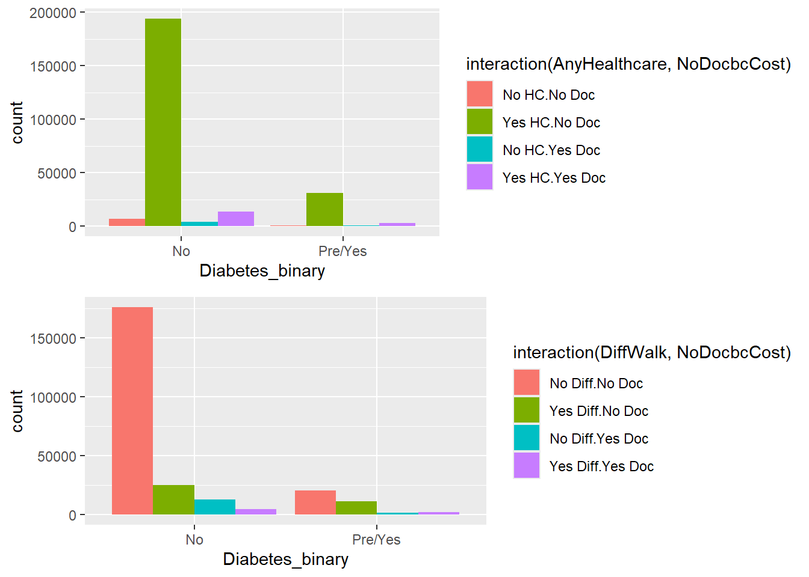
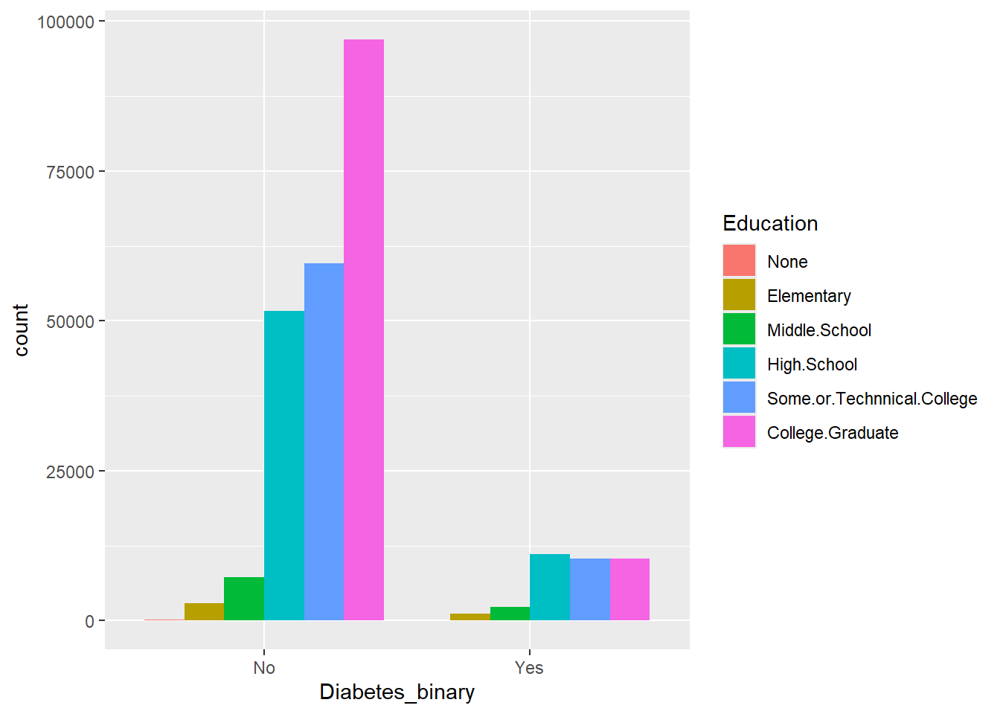

library(readr)
library(readxl)
library(Rmisc)
library(dplyr)
library(tidyverse)
library(ggplot2)
library(scales)ST558 - Final Project: EDA
Introduction:
The base data set for this workthrough is a binary data set of survey responses to a CDC behavioral and chronic disease surveillance study done for diabetes. I have chosen
mental health,healthcareandability/inability to see a physicians due to the cost of the visit. The response variable is thepresence of prediabetes or diabetes. The purpose of this EDA is to get a general idea of how the chosen variables effect levels of diabetes. Ultimately, I will be using these variables to model the likelyhood of diabetes occuring at different levels of variables.
Initial Library Read-in:
Data:
#reading in the csv
diabetes_data <- read_csv("./data/diabetes_binary_health_indicators_BRFSS2015.csv")Rows: 253680 Columns: 22
── Column specification ────────────────────────────────────────────────────────
Delimiter: ","
dbl (22): Diabetes_binary, HighBP, HighChol, CholCheck, BMI, Smoker, Stroke,...
ℹ Use `spec()` to retrieve the full column specification for this data.
ℹ Specify the column types or set `show_col_types = FALSE` to quiet this message.#checking on missing values
sum(is.na(diabetes_data))[1] 0#getting an idea of the data set
diabetes_data# A tibble: 253,680 × 22
Diabetes_binary HighBP HighChol CholCheck BMI Smoker Stroke
<fct> <fct> <fct> <fct> <dbl> <fct> <fct>
1 No Yes HBP Yes HiC Yes CC 40 Yes Sm No St
2 No No HPB No HiC No CC 25 Yes Sm No St
3 No Yes HBP Yes HiC Yes CC 28 No Sm No St
4 No Yes HBP No HiC Yes CC 27 No Sm No St
5 No Yes HBP Yes HiC Yes CC 24 No Sm No St
6 No Yes HBP Yes HiC Yes CC 25 Yes Sm No St
7 No Yes HBP No HiC Yes CC 30 Yes Sm No St
8 No Yes HBP Yes HiC Yes CC 25 Yes Sm No St
9 Pre/Yes Yes HBP Yes HiC Yes CC 30 Yes Sm No St
10 No No HPB No HiC Yes CC 24 No Sm No St
# ℹ 253,670 more rows
# ℹ 15 more variables: HeartDiseaseorAttack <fct>, PhysActivity <fct>,
# Fruits <fct>, Veggies <fct>, HvyAlcoholConsump <fct>, AnyHealthcare <fct>,
# NoDocbcCost <fct>, GenHlth <fct>, MentHlth <dbl>, PhysHlth <dbl>,
# DiffWalk <fct>, Sex <fct>, Age <fct>, Education <fct>, Income <fct>Summaries:
#getting an idea of the count of different levels, this can also provide a general idea of how likely it is for someone to have diabetes under certain conditions; this is further shown through the plots
diabetes_data |>
group_by(Diabetes_binary, MentHlth, AnyHealthcare, NoDocbcCost) |>
tally()# A tibble: 223 × 5
# Groups: Diabetes_binary, MentHlth, AnyHealthcare [115]
Diabetes_binary MentHlth AnyHealthcare NoDocbcCost n
<fct> <dbl> <fct> <fct> <int>
1 No 0 No HC No Doc 4935
2 No 0 No HC Yes Doc 1834
3 No 0 Yes HC No Doc 139351
4 No 0 Yes HC Yes Doc 6157
5 No 1 No HC No Doc 229
6 No 1 No HC Yes Doc 129
7 No 1 Yes HC No Doc 6882
8 No 1 Yes HC Yes Doc 486
9 No 2 No HC No Doc 363
10 No 2 No HC Yes Doc 192
# ℹ 213 more rows#looking at the interactions between the different categorical variables and the response variable
p1 <- ggplot(diabetes_data, aes(Diabetes_binary, fill = interaction(AnyHealthcare, NoDocbcCost))) +
geom_bar(position = "dodge")
p2 <- ggplot(diabetes_data, aes(Diabetes_binary, fill = interaction(DiffWalk, NoDocbcCost))) +
geom_bar(position = "dodge")
multiplot(p1,p2)
When looking at the interactions, a vast majority of the population has healthcare, no difficulty walking and costs are not an immediate concrern when going to the doctor. This majority also does not exibit any signs of diabetes. There are logical conclusions that could be drawn from this data alone, such as access to healthcare leading to healthier life styles which lower the chances of diabetes occuring in a population. However, these are just raw numbers. Further analysis would be needed to examine the likelyhood of such an occurance.
#using a different setup to look at the interaction
ggplot(diabetes_data, aes(x = Diabetes_binary, fill = AnyHealthcare)) +
geom_bar(position = "dodge") +
facet_grid(.~NoDocbcCost, labeller=label_both) #visualizing population mental health and diabetes diagnisis
ggplot(diabetes_data, aes(x = MentHlth, fill = Diabetes_binary)) +
geom_bar(position = "dodge")
#adding mental health to other variable visualization
ggplot(diabetes_data, aes(MentHlth, fill = Diabetes_binary)) +
geom_bar(position = "dodge") +
facet_grid(AnyHealthcare~NoDocbcCost, switch = "x", labeller=label_both) +
theme_bw() +
theme(strip.placement = "outside",
strip.background = element_blank(),
panel.border = element_blank(),
panel.spacing = unit(0, "points"),
axis.line = element_line()) +
scale_y_continuous(labels = function(y) format(y, scientific = FALSE))